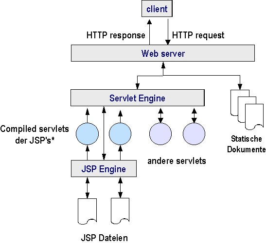

jsp & tag library. Eine Einführung toc prev next
2.1 Die JSP lebt als servlet
 *Instanzen der Klassen die javax.servlet.jsp.JspPage oder javax.servlet.jsp.HttpJspPage implementieren. Sie liegen im 'work' Verzeichnis des servers. |
jsp & tag library. Eine Einführung toc prev next [ back to a P a g e ]